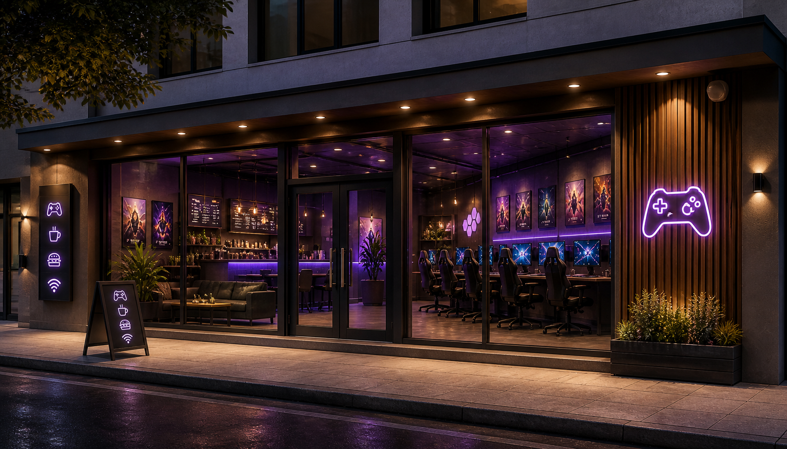

Welcome to Respawn Lounge— where every gamer gets a second life.
Respawn Lounge was created with one simple idea: gaming is better together. Whether you are a casual player looking to unwind, a competitive grinder chasing your next win, or just someone who loves the energy of a shared gaming space, Respawn Lounge is your home base.
Our mission is to create a high-quality, inclusive gaming environment where players of all skill levels can connect, compete, and have fun. We believe gaming is not just a hobby—it is a community, a passion, and a way to bring people together.
At Respawn Lounge, we provide:
Whether you're dropping into a battle royale, grinding ranked matches, or exploring new worlds, we have got everything you need to play at your best.
Respawn Lounge is more than just a gaming café—it is a hub for the local gaming community. We host:
We are committed to building a space where everyone feels welcome, respected, and part of the team.
In gaming, a respawn means a fresh start—a new chance to try again, improve, and win. That is the spirit we bring to everything we do. No matter your skill level or experience, there is always another round waiting for you here.
Whether you are here to compete, chill, or just hang out, Respawn Lounge is ready for you. Grab a seat, power up, and press start.
Game on.